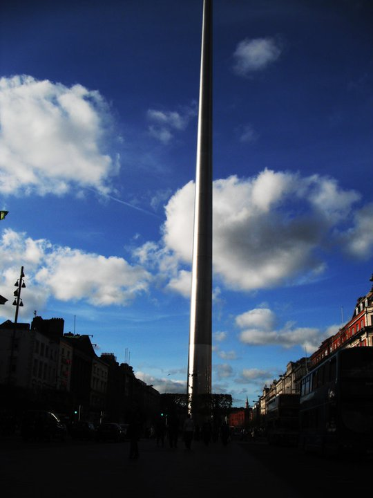

I went to Ireland while studying abroad in Italy. I mostly stayed in Dublin, venturing out to see Howth. Dublin honestly has some of the nicest people I have ever met. People would randomly wave at me, which was confusing at first. It was really fun to vist the Guinness Factory and get tipsy in the middle of the day. It was also really fun to do a pub crawl and meet other tourists enjoying the city. Though I also got to visit Dublin Spire and Kilmainham Gaol (which was interesting as it was depressing), St. Stephen's Green was the site that really left an impression on me. It was just so pretty, with huge swan that people could feed! I also really like Howth, which I found to be beautiful. I really wish I could have seen more of the Irish coast, but I guess I will just have to go back some day!
